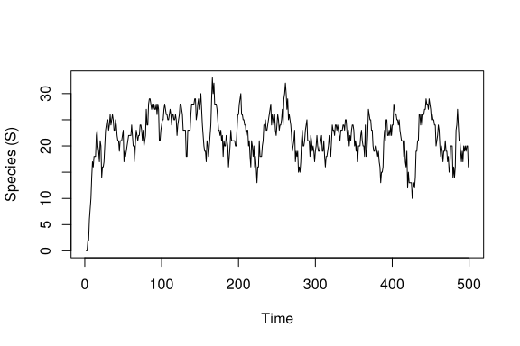
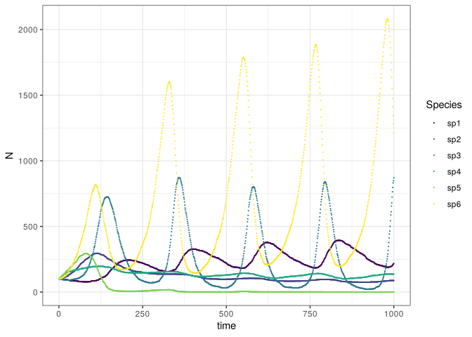

This package simulates the assembly of ecological networks from a regional metaweb. Three main models are implemented; first the trophic theory of island biogeography [2] with the addition that secondary extinctions are not fixed but happen with a defined probability. Second a generalized Lotka-Volterra stochastic model. Third, a multilayer version of the first model in which non-trophic interactions (mutualism, facilitation, competition) change the extinction rates. Species can migrate from the metaweb and establish the ecological interactions specified in the metaweb.
License: MIT
Installation
Using the ‘devtools’ package:
install.packages("devtools")
library(devtools)
install_github('lsaravia/meweasmo')
library(meweasmo)Get started with the trophic assembly model
metaWebNetAssemblyCT() simulates the assembly of a local food web from a regional metaweb in continuous time, following the trophic theory of island biogeography [2] as extended in [1]:
- species arrive from the metaweb with migration rate m,
- present species go extinct with rate e,
- predators with no prey in the local web go extinct with the secondary extinction rate se.
Only the links among the species present are realized. The metaweb is a logical matrix where metaW[j, i] is TRUE if species j is a prey of species i. As an example we build a random metaweb of 40 species in which species only eat species with a lower index, so the first ones are basal:
library(meweasmo)
set.seed(1)
S0 <- 40
metaW <- matrix(FALSE, S0, S0)
metaW[upper.tri(metaW)] <- runif(S0 * (S0 - 1) / 2) < 0.1
sum(colSums(metaW) == 0) # basal species
#> [1] 14Simulate 500 time units with the same rates for all species:
tf <- 500
sim <- metaWebNetAssemblyCT(metaW, m = rep(0.1, S0), e = rep(0.05, S0), se = rep(0.5, S0), time = tf)
names(sim)
#> [1] "S" "L" "STime" "A"S and L are the number of species with trophic links and of links in the local web at each time, STime the presence of each species (species x time) and A the adjacency matrix of the local web at the end:
plot(2:(tf - 1), sim$S[2:(tf - 1)], type = "l", xlab = "Time", ylab = "Species (S)")
c(metaweb_S = S0, local_S = mean(sim$S[400:(tf - 1)]),
local_C = mean(sim$L[400:(tf - 1)] / sim$S[400:(tf - 1)]^2))
#> metaweb_S local_S local_C
#> 40.00000000 20.83000000 0.05500939The local web reaches a stochastic equilibrium below the size of the metaweb, set by the balance between migration and (primary and secondary) extinction. In [1] the rates m, e and se are fitted by approximate Bayesian computation to the number of species and the connectance of empirical food webs.
Multilayer networks: trophic and non-trophic interactions
metaWebNetAssemblyML() extends metaWebNetAssemblyCT() to multilayer networks. The trophic layer defines the meta-web and the secondary extinctions, as in metaWebNetAssemblyCT(); the non-trophic layers change the extinction rates: losing a mutualist or a habitat provider raises the extinction rate of a species, losing a competitor lowers it. Optionally, species can depend obligately on others (e.g. foundation species). The network can be an mgraph from the multiweb package, a list of igraph layers, or an edge list.
fpath <- system.file("extdata", package = "multiweb")
dn <- list.files(fpath, pattern = "^Kefi2015.*\\.txt$")
mg <- multiweb::readMultiplex(dn, types = c("Negative", "Positive", "Trophic"), fpath, skipColumn = 2)
# sign of the effect received by the species at the origin and at the end of each link
layers <- data.frame(layer = c("Trophic", "Positive", "Negative"), sign_from = c(-1, 1, -1),
sign_to = c(1, 0, 0), rule = c("trophic", "modifier", "modifier"))
r <- metaWebNetAssemblyML(mg, layers, beta = c(pos = 1, neg = 1), m = 0.1, e = 0.05, se = 0.5, time = 300)See the article Assembly of multilayer networks (vignette("multilayer-assembly")) for a worked example with the Chilean rocky intertidal network of Kéfi et al. (2015).
Get Started with Generalized Lotka-volterra model
Simulate a 6 species network without migration
- Create a metaweb with a Lotka-Volterra interaction matrix structure, I added one last column with intrinsic growth rate.
library(tibble)
parms <- tibble::tribble(
~a1, ~a2, ~a3, ~a4, ~a5, ~a6, ~r,
0, 4e-6, 3e-5, 2e-5, 0, 0, -0.01,
-1e-5, -1e-4, 0, 1e-4, 6e-5, 0, -0.001,
-1e-4, 0, 0, 0, 6e-5, 5e-5, -0.01,
-1e-4, 1e-4, 0, -5e-4, -1e-5, 0, 0.08,
0, -1e-4,-1e-4, 0, -1e-6, 0, 0.04,
0, 0,-1e-4, 2e-4, 0, 0, 0.00
)- Set the initial conditions and simulate the model with no migration during 1000 time steps
library(meweasmo)
yini <- c(N1 = 100, N2 = 100, N3 = 100, N4 = 100, N5 = 100, N6 = 100)
A <- as.matrix(parms[,1:6])
r<- as.numeric(parms$r)
m <- c(0,0,0,0,0,0)- We can calculate the proportions of the different types of interactions using the metaweb matrix and the vector of species present, in this case all species
calcPropInteractionsGLVadjMat(A,yini)
#> [1] 0.2 0.6 0.0 0.1 0.1- then run de simultation
set.seed(42)
A1 <- metaWebNetAssemblyGLV(A,m,r,yini,1000,0.1)- Check the results of the simulation: the abundances and the proportion of interactions, at the last time step
A1$STime[,1000]
#> [1] 218 88 871 137 0 1212
calcPropInteractionsGLVadjMat(A,A1$STime[,1000])
#> [1] 0.2857143 0.5714286 0.0000000 0.1428571 0.0000000- Plot the time series of the species
df1 <- as.data.frame(t(A1$STime))
df1$time <- 1:1000
names(df1) <- gsub("V", "sp", names(df1))
library(tidyr)
df1 <- gather(df1,key="Species",value="N", sp1:sp6)
library(ggplot2)
ggplot(df1, aes(time,N,colour=Species)) + geom_point(size=0.1) + theme_bw() + scale_color_viridis_d()
References
Saravia, L. A., Marina, T. I., Kristensen, N. P., De Troch, M., & Momo, F. R. (2022). Ecological network assembly: How the regional metaweb influences local food webs. Journal of Animal Ecology, 91(3), 630–642. https://doi.org/10.1111/1365-2656.13652
Gravel, D., Massol, F., Canard, E., Mouillot, D., & Mouquet, N. (2011). Trophic theory of island biogeography. Ecology Letters, 14(10), 1010–1016. https://doi.org/10.1111/j.1461-0248.2011.01667.x